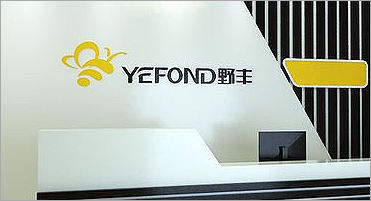
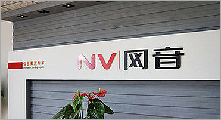
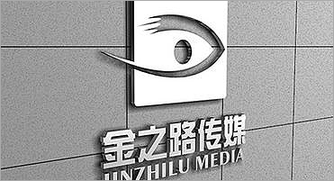

安徽歙县老胡开文墨业有限公司
徽墨作为文房四宝的重要品类，在中国制墨史上占有重要地位，有拈来轻、磨来清、嗅来馨、坚如玉、研无声、一点如漆、万载存真的特点。2006年，徽墨制作技艺被列入第一批国家级非遗代表性项目名录......
详细>>

安徽省祁门红茶发展有限公司
祁门红茶主产于安徽省祁门县，是中国十大名茶中唯一的红茶。成品祁红色泽乌润，条索紧细，锋尖秀丽，冲泡时汤色红艳透明，叶底鲜红明亮，茶中蕴藏有兰花香，芳馥持久，独树一帜，被誉为“祁门香”。2008年，祁门红茶制作技艺被列入第二批国家级非遗代表性项目名录......
详细>>

黄山市竹溪堂徽雕艺术有限公司
徽州竹雕是古徽州地区重要的雕刻艺术品类，以高浮雕见长，是在徽文化和徽州山水环境中形成的特色工艺，作品大多构图紧凑，主题分明，动静结合，刻法多变，讲究写意与写实相结合，有鲜明的地域风格和较高的审美价值。2014年，徽州竹雕被列入第四批国家级非遗代表性项目名录......
详细>>

霍邱县淮美奇工艺品有限公司
霍邱柳编是产于安徽省霍邱县的柳编工艺品，编织技法丰富，产品坚固耐用，天然无污染，广泛应用于当代生活家居、园艺装饰等方面，是当地手工技艺的典型代表。2011年，霍邱柳编被列入第三批国家级非遗代表性项目名录......
详细>>